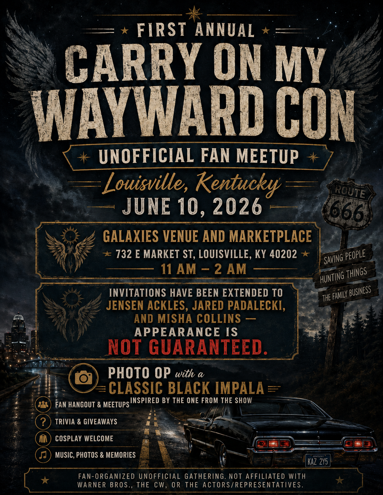
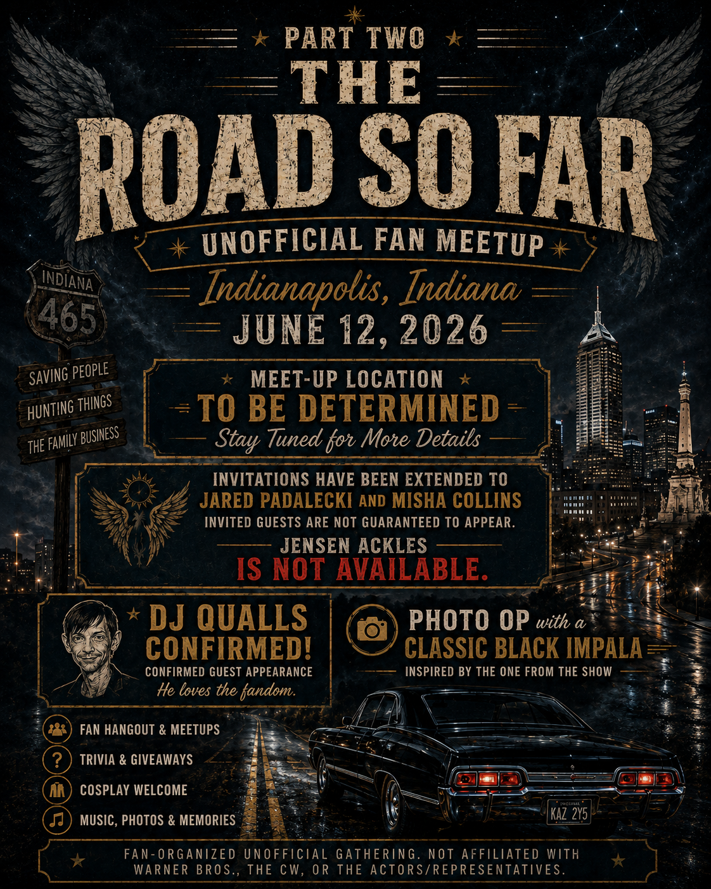

Part One
Louisville, Kentucky
First Annual Carry On My Wayward Con. Unofficial fan meetup on June 10, 2026 at Galaxies Venue and Marketplace.
A fan-organized Supernatural-inspired meetup series built around the flyers below. This homepage keeps the focus on the official event artwork, dates, cities, and key disclaimers.
Featuring an unofficial Louisville, Kentucky fan convention meetup on June 10, 2026 and Part Two: The Road So Far in Indianapolis, Indiana on June 12, 2026.
This is an unofficial fan convention / fan meetup concept and is not affiliated with Warner Bros., The CW, the actors, or their representatives. Invitations may be extended to talent, but invited appearances are not guaranteed unless explicitly confirmed.

First Annual Carry On My Wayward Con. Unofficial fan meetup on June 10, 2026 at Galaxies Venue and Marketplace.

The Road So Far. Unofficial fan meetup concept for June 12, 2026 with more details still to come.